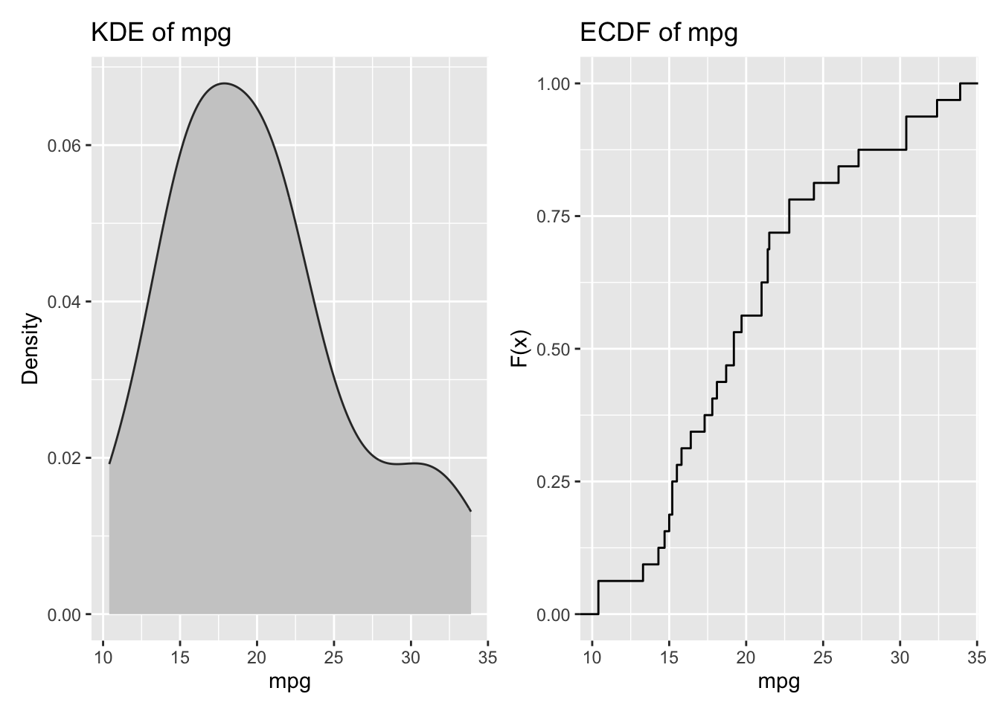
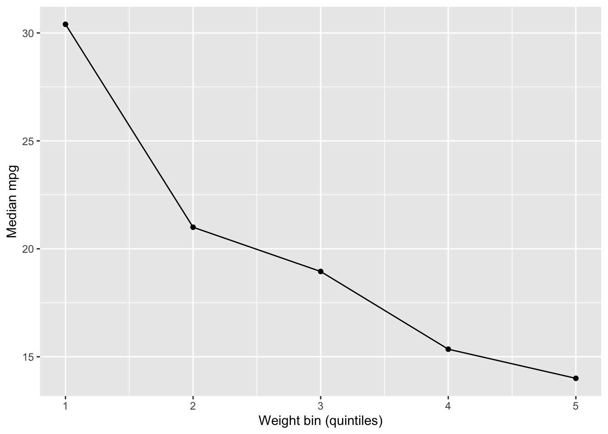
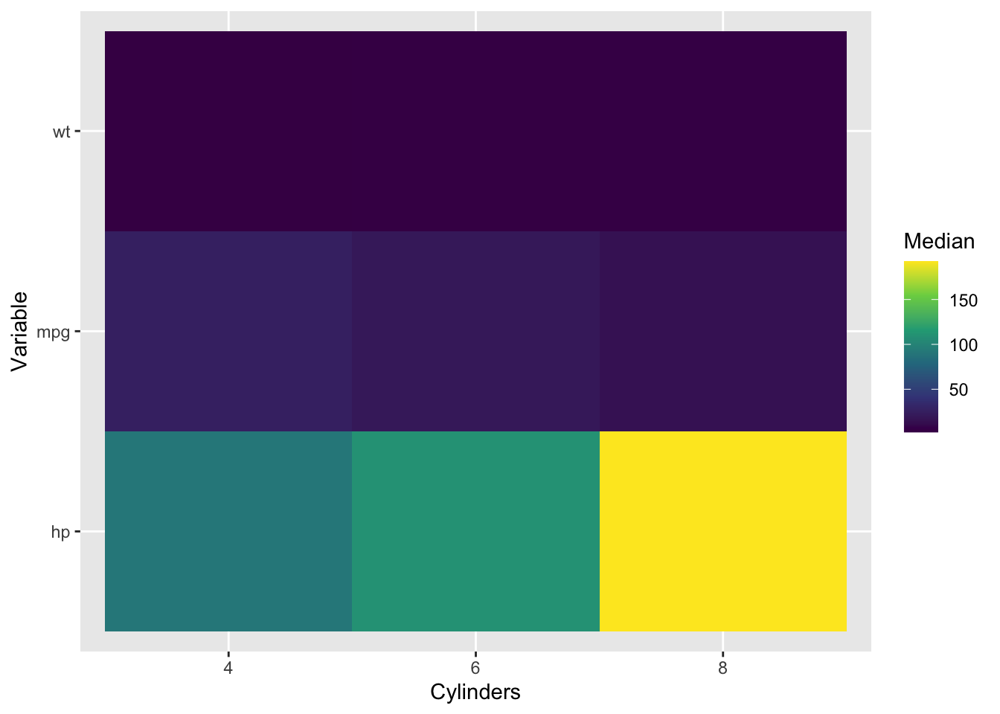

A mean, a median, and a standard deviation can be computed in seconds, but they rarely tell the whole story. Two datasets can share identical means and variances while having radically different shapes, outlier structures, or subgroup patterns. In high‑dimensional datasets, univariate summaries also conceal interaction and conditional relationships that often matter more than any marginal distribution.
Basic descriptive statistics are necessary but not sufficient. This chapter expands the descriptive toolbox with methods that remain non‑inferential but offer far richer insight into data structure. The goal is to answer more nuanced questions:
Where are the mass and tails of the distribution?
Are there subpopulations with distinct profiles?
Are relationships nonlinear, heterogeneous, or conditional?
Which variables are stable versus volatile across subgroups?
2.2 Distributional Shape: Beyond Mean and Variance
2.2.1 Quantiles and Tail Behavior
Quantiles describe where the data live, not just how they average out. In applied settings, percentiles often carry more operational meaning than averages. The 90th percentile of response time, income, or waiting time is usually more informative than a mean.
Common descriptive quantiles:
Median (\(Q_{0.5}\)): robust center
Interquartile range (IQR): spread of the middle 50%
Tail quantiles: \(Q_{0.9}\), \(Q_{0.95}\), \(Q_{0.99}\) for risk or extreme behavior
These are especially important in skewed or heavy‑tailed distributions where the mean can be misleading.
2.2.2 Skewness, Kurtosis, and Robust Alternatives
Skewness and kurtosis summarize asymmetry and tail heaviness, but they are sensitive to outliers. In descriptive work, robust measures often provide more stable diagnostics:
Median absolute deviation (MAD) as a scale measure
Robust z‑scores using median and MAD instead of mean and standard deviation (SD)
Quantile ratios (e.g., \(Q_{0.9}/Q_{0.5}\)) for skewness proxies
These measures preserve descriptive intent while reducing sensitivity to extreme observations.
2.2.3 Density and Empirical Distribution Functions
Histograms can be misleading due to binning choices. Kernel density estimates (KDEs) and empirical CDFs show shape more faithfully. ECDFs are particularly useful for comparing distributions because they show the full cumulative structure without smoothing.
# Density and ECDF side by sidep1 <- mtcars %>%ggplot(aes(x = mpg)) +geom_density(fill ="grey80", color ="grey20") +labs(title ="KDE of mpg", x ="mpg", y ="Density")p2 <- mtcars %>%ggplot(aes(x = mpg)) +stat_ecdf(geom ="step") +labs(title ="ECDF of mpg", x ="mpg", y ="F(x)")p1 + p2

2.3 Multimodality and Mixtures
A single distribution can conceal multiple regimes. For example, household income often reflects a mixture of wage earners, retirees, and business owners. Multimodality is a descriptive signal of underlying subpopulations. Techniques to detect it include:
Kernel density plots with multiple peaks
Bimodality coefficients or dip tests (used descriptively)
Mixture summaries (e.g., fitting a Gaussian mixture model purely for segmentation)
Even without formal modeling, visual inspection and stratified summaries can reveal important mixtures.
2.4 Bivariate and Conditional Descriptives
2.4.1 Conditional Means and Quantiles
Univariate summaries hide conditional variation. A variable may have a stable mean overall but vary dramatically across categories. Conditional statistics are simple to compute and often reveal key structure:
\(E(Y\mid X)\): mean outcomes by group
\(Q_{0.5}(Y\mid X)\): median outcomes by group
\(\text{IQR}(Y\mid X)\): spread by group
These summaries can be visualized using grouped boxplots, violin plots, or ridgeline plots.
2.4.2 Nonlinear Relationships
Scatterplots with smoothers (e.g., LOESS) often reveal nonlinear trends that correlations miss. A zero correlation does not imply “no relationship”; it may reflect a U‑shape, threshold effect, or segmented pattern.
A useful descriptive strategy is to compute binned summaries: divide a continuous predictor into quantile bins and summarize the response within each bin. This provides a simple approximation of conditional structure without invoking a full model.
mtcars %>%mutate(wt_bin =ntile(wt, 5)) %>%group_by(wt_bin) %>%summarise(mpg_median =median(mpg), .groups ="drop") %>%ggplot(aes(x = wt_bin, y = mpg_median)) +geom_line() +geom_point() +labs(x ="Weight bin (quintiles)", y ="Median mpg")

2.4.3 Association Heterogeneity
Associations can differ across subgroups. An overall correlation might hide a strong relationship within a subgroup or even mask a reversal (Simpson’s paradox). Descriptive analysis should therefore report stratified associations when meaningful groupings exist.
2.5 Outliers, Extremes, and Influence
Outliers are not always errors. They often carry substantive meaning: high‑risk patients, exceptional transactions, or rare events. Descriptive analysis should treat outliers as signals first, and errors second.
Key descriptive checks include:
Tail inspection: list the largest/smallest observations
Influence screening: compare summaries with and without extreme values
Robust summaries: medians, trimmed means, and MAD
A practical workflow is to compute both standard and robust summaries side by side. Large divergence is a flag that distributional extremes matter.
2.6 Missing Data as Descriptive Information
Missingness is itself informative. The pattern of missing data can reveal survey fatigue, data collection issues, or systematic exclusion of certain groups.
Descriptive checks include:
Missingness rates by variable
Missingness by subgroup (e.g., higher nonresponse among certain demographics)
Understanding missingness patterns is a prerequisite for credible descriptive analysis because it reveals which parts of the data are under‑observed or biased.
When comparing variables on different scales, raw summaries can mislead. Standardization puts variables on a common metric:
\[
Z = \frac{X - \mu}{\sigma}
\]
However, standardization is not always desirable. For skewed or heavy‑tailed distributions, robust scaling using medians and MAD can be more appropriate:
Standardization is especially useful when building profiles of observations across many variables, a topic revisited in later chapters on clustering and tree‑based methods.
2.8 Multivariate Profiles and “Descriptive Models”
As dimensionality increases, summaries must become multivariate. Two simple but powerful tools are:
Composite indices: average or weighted sums of standardized variables to create a high‑level descriptive score
Composite indices are not causal models; they are descriptive constructs that summarize a multidimensional concept (e.g., socioeconomic status, health risk, engagement intensity). Transparency in construction is essential for interpretability.
2.9 Visual Descriptives That Scale
Certain visual tools provide richer descriptive information than conventional charts:
Violin plots: show full distribution and density
Boxen plots: emphasize tails across many observations
Ridge plots: compare distributions across many groups
Heatmaps: visualize large tables of summary statistics
ECDFs: compare distributions without binning
These graphics remain descriptive but give a more faithful sense of distributional complexity and subgroup structure.
# Heatmap of median summary statistics across groupsmtcars %>%select(mpg, hp, wt, cyl) %>%group_by(cyl) %>%summarise(across(c(mpg, hp, wt), median), .groups ="drop") %>%pivot_longer(-cyl, names_to ="variable", values_to ="median") %>%ggplot(aes(x =factor(cyl), y = variable, fill = median)) +geom_tile() +scale_fill_viridis_c() +labs(x ="Cylinders", y ="Variable", fill ="Median")

2.10 A Practical Workflow
A robust descriptive workflow often follows this sequence:
Univariate inspection: quantiles, density plots, robust summaries
The aim is not sophistication but discipline: always inspect robust, conditional, and distributional features before moving to advanced methods.
2.12 Looking Ahead
This chapter expands the descriptive mindset beyond simple averages. The next chapters formalize these ideas for mixed data types and systematic association measures. Once variable types are correctly handled, we can build type‑aware association matrices, visualize them as networks, and scale descriptive analysis to hundreds of variables.
The key lesson is simple: descriptive analysis improves when we stop summarizing variables in isolation and start describing structure.